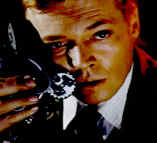
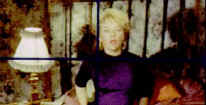

Peeping Tom A-, A- GB/1960/Color/Widescreen 1.66:1/Mono/109 minutes/Directed by Michael Powell/Starring Carl Boehm, Anna Massey, Moira Shearer/Voyager/29 Chaps/Audio Commentary/CLV/$49.955 You could say that this is the film that closed the door on Michael Powell's film career, so harsh was the critical reception. It is mind boggling to think that a creative and daring filmmaker such as Powell would make his last film at the age of 55 while still at the height of his cinematic power simply because of what the industry perceived as one, wild, misstep. Nevertheless, it appears that this was the case. Peeping Tom is a  difficult and modern film, more comfortable in company with contemporary sophistication, though it is a very stylized and elegant production. Powell attempts to draw his audience close to the workings of a serial killer. Like the killer, the audience is placed in a similar position through Powell's use of camera perspective that often replicates exactly what the perpetrator is seeing.As Mark Lewis, the twisted and perverse mad man, Carl Boehm is eerily sympathetic, which exacerbates the audience's moral confusion. Choosing to make Mark Lewis the product of an abused childhood serves to reinforce the emotional conflict of audience. It is fascinating to observe the everyday movement's of Lewis, often desperately seeking to control the impulse which he realizes will finally overtake the conflicting gentle aspect of his nature. Powell's choice of making Lewis a cinematographer working within the structure of the British studio system was a daring slap at his own industry. The theme of voyeurism is explored on many levels by Powell. The filmmakers are voyeurs, as are the audience, as is the killer. The viewer's fascination with watching is hypnotic and as he is drawn into the precisely chaotic web crafted by the "voyeur" director, the realization that the director of Peeping Tom  has turned an accusing finger outward from the screen is a stinging slap.From the very opening setting, painted in tawdry expressionistic tones of color, of a street that slid off an Edward Hopper painting, sculpted with foreboding shadows, Powell recalls the somber noirish mood of early black and white German cinema. The whistling in the background clearly is an allusion to Fritz Lang's M. All of the sets succeed in creating an undefined creepy discomfort. The deliberate pacing mimics the perpetual clock of the demented serial killer, unrelenting in its metronome ticking, leading inevitably to another uncontrollable act of desperate violence. Boehm has been perfecting cast by Powell as a craftsman in the art of cinematic dementia. His clean cut and mild mannered look in no way outwardly suggests the seething perversion within him, yet it is this extreme underplaying of the role that makes it most convincing. Anna Massey, wide-eyed and innocent, compliments Boehm very well as the neighbor downstairs who falls for the shy cameraman. Moira Shearer, Powell's incandescent leading lady of The Red Shoes, makes her last feature film appearance again under the guidance of mentor Powell, memorably moving through the steps of a dance of death to the rapid beating of the excellent jazz score. What at first might seem like an excuse for Shearer to show off her dancing versatility, the long thirteen plus minute sequence is extremely effective at building unbearable tension climaxing in a full-throated lens-filling scream. All of the production elements of Peeping Tom are first rate, from the appropriately grating jazz scoring by Brian Easdale and Wally Stott to the stark and economical set design by Arthur Lawson. Cinematographer Otto Heller gives Powell everything he could ask for in capturing the many layers of Peeping Tom. The Criterion Collection laser disc is a praiseworthy production that does justice to the artistry of Powell. Color and shadow have been dutifully transferred to disc and the mono sound track is as clear as can be. The print is in very good condition and I am sure that Powell, who died in 1990, would be extremely proud to see Peeping Tom in this sharply transferred classy edition. Voyager has provided an audio commentary by Laura Mulvey on analog track 2, which, while at times is informative and insightful, too often falls back on describing the scene we are watching. It is still extremely welcome on this disc as a generous bonus. Give in to those latent voyeuristic instincts and sit back and become involved in Peeping Tom. It is a terrific and terrifying film. |